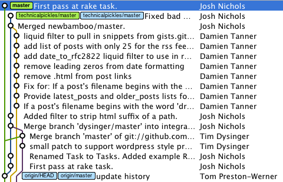

pick out individual commits
Sometimes you might only want one commit out of a branch, or perhaps you’ll need to pluck a file from only one changeset. This tip is going to go over some ways on how to pull out one individual commit and work with it.

The basic case here is that you’re looking at another branch or perhaps someone’s fork of a project, but you only want to bring over one commit, a few commits, or what have you. Luckily, Git has plenty of tools to make this easy for you. Here’s the scenario. There’s been a lot of development on jekyll lately, but I only want to bring in one or two specific changesets. The repository looks like this:

As you can see, our master branch is at the bottom of this flurry of activity, and there’s been quite a lot of activity above it. However, I just want the commit highlighted to be brought into my repository. Once you’ve got the commit SHA, you have a few options:
1) Use git cherry-pick to pluck out the commit. This will create a new commit and preserve the old commit’s metadata.
2) Create a patch using git format-patch then bring that in using git am. This allows you to --signoff the commit too! This also makes a new commit.
3) Use git apply with the patch to put the changes into your working directory so you can edit them further.
4) git merge the changes right in, which preserves the original commit (provided there’s no conflicts)
Let’s try out all four. We know the commit SHA is b50788b, so we can work with that. First off, let’s cherry pick the commit.
$ git cherry-pick b50788b Finished one cherry-pick. [master]: created bcb0d1b: "First pass at rake task." 3 files changed, 63 insertions(+), 3 deletions(-) create mode 100644 lib/jekyll/task.rb $ git log --pretty=oneline --abbrev-commit HEAD~3..HEAD bcb0d1b... First pass at rake task. 2569e9f... update history 2135a53... Using block syntax of popen4 to ensure that subprocesses...
As you can see, it created a new commit, and the work has been brought in successfully. Both this method and the third method will produce a history like so, with the new commit on top:

Here’s how to wrap up the commit with format-patch and apply it using git am.
$ git format-patch -1 b50788b 0001-First-pass-at-rake-task.patch $ git am 0001-First-pass-at-rake-task.patch Applying: First pass at rake task. $ git log --pretty=oneline --abbrev-commit HEAD~3..HEAD c05eaa1... First pass at rake task. 2569e9f... update history 2135a53... Using block syntax of popen4 to ensure that subprocesses...
This process is normally how projects accept patches over email, but this method works out quite nicely for this purpose as well. Of course, you could pipe format-patch and am into one command if you feel like it, and that will save you having to worry about the file left over.
Next, if we use git apply, then we can get the changes live and work with them.
$ git format-patch -1 b50788b
0001-First-pass-at-rake-task.patch
$ git apply 0001-First-pass-at-rake-task.patch
0001-First-pass-at-rake-task.patch:59: trailing whitespace.
0001-First-pass-at-rake-task.patch:75: trailing whitespace.
private
warning: 2 lines add whitespace errors.
$ git status
# On branch master
# Changed but not updated:
# (use "git add <file>..." to update what will be committed)
# (use "git checkout -- <file>..." to discard changes in working directory)
#
# modified: jekyll.gemspec
# modified: lib/jekyll.rb
#
# Untracked files:
# (use "git add <file>..." to include in what will be committed)
#
# 0001-First-pass-at-rake-task.patch
# lib/jekyll/task.rb
no changes added to commit (use "git add" and/or "git commit -a")
Finally, we can simply merge the commit right in, which is quite simple in this case since there’s no conflicts.
$ git merge b50788b Updating 2569e9f..b50788b Fast forward jekyll.gemspec | 6 ++-- lib/jekyll.rb | 2 + lib/jekyll/task.rb | 58 ++++++++++++++++++++++++++++++++++++++++++++++++++++ 3 files changed, 63 insertions(+), 3 deletions(-) create mode 100644 lib/jekyll/task.rb $ git log --pretty=oneline --graph --abbrev-commit b50788b... First pass at rake task. 2569e9f... update history 2135a53... Using block syntax of popen4 to ensure that subprocesses...
Graphically, we can see that the commit has been brought into the mainline on the far left:
As always, if you mess up you can go back one commit after you’ve applied a patch by using git reset --hard HEAD^ or possibly even by reverting files. If things go really haywire you can always check the reflog. If you have other ways of dealing with this situation, let us know in the comments!